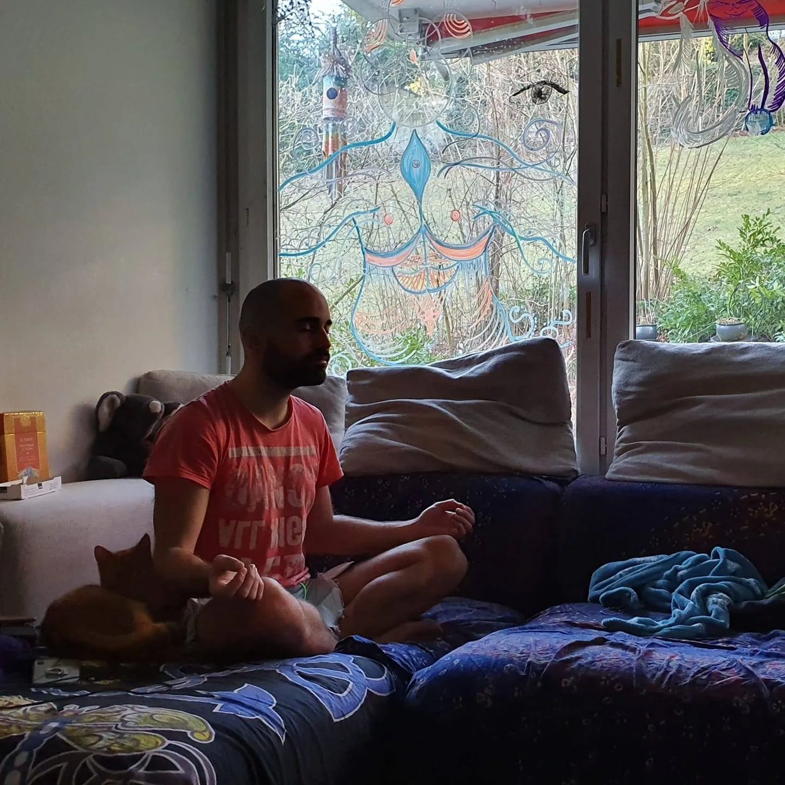

MEDITACIÓN
"La meditación es un espejo que te refleja tus virtudes y tus vicios." — Farid Al-Din Attar

MEDITACIÓN
A nivel mental, quienes la practican mencionan sentir una potenciación de su capacidad de observación y un mayor nivel de paz mental y relajación. También mejora estados de ansiedad al permitir observar la situaciones con más calma, y facilita una mejoría en el estado de ánimo. Por otro lado, contribuye a que no nos identifiquemos y le demos una tonalidad menos exagerada a la importancia de nuestros pensamientos.
Practico distintos tipo de meditación desde 2011, y desde 2012 he participado en seis retiros de meditación con la Fundación Vipassana (incluído un Satipatthana Sutta) y participado como voluntario en los eventos.
Meditación Hara, Vipassana, Anapana y Metta, son las que más me han acompañado en este tiempo.
— Manuel Lameiro —
Nos invito a cerrar los ojos y a respirar.
Observemos nuestra respiración,
tomate tiempo para inhalar y exhalar.
Te invito a sentir lo sagrado que hay dentro tuyo.
Hay una calma sentida, necesaria.
A medida que respiramos nos hacemos presente; apaciguamos nuestro cuerpo, nuestro sentir, nuestra alma. El aire que entra no es el mismo que sale, la conciencia se agudiza.
La mente se aquieta y, tal vez, logremos centrar nuestra atención en el interior.
La mente se aquieta y, tal vez, logremos centrar nuestra atención en el interior.
El alma da las gracias y da paso a la sabiduría interna.
Comenzamos a sentir, lo que podríamos animarnos a decir, “el placer de conocernos”.
Nos invito a conectar con lo ya conocido; que nos espera paciente, abierto, pendiente a que lo abracemos, y así, rendirnos ante él.
Muchos cariños a tí y al maravilloso Ser que habita en tu interior.
Mi Ser está a tu servicio.
PREGUNTAS FRECUENTES
¿Cuánto dura una sesión?
Las sesiones grupales durarán una hora aproximadamente. Las sesiones individuales van a depender de la disponibilidad de la persona, pueden variar entre treinta minutos a una hora y media.